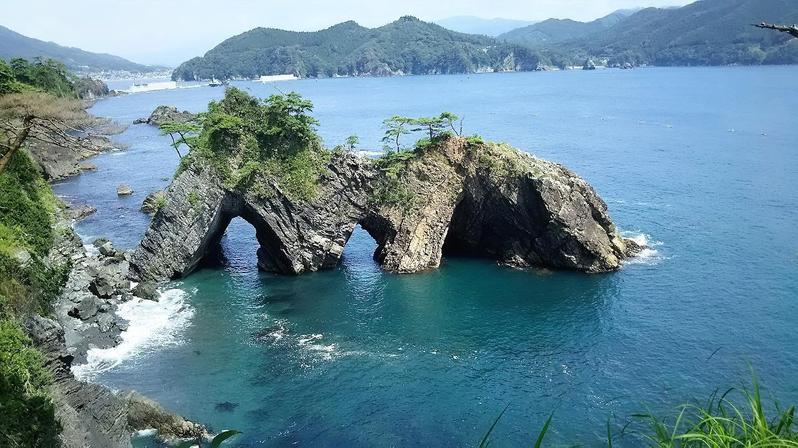
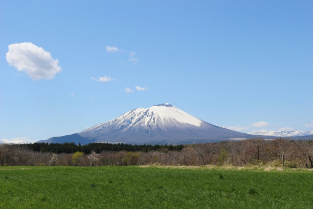

|
東日本大震災で被災した三陸地域の復興と被災の伝承を目的として、陸中海岸国立公園を中核として、平成25年、環境省により創設された国立公園です。平 成27年3月には、南三陸金華山国定公園を編入し、青森県八戸市から宮城県石巻市までのエリアが指定されました。 南北の延長は約255km、北部は「海のアルプス」とも称される豪壮な大断崖、南部は典型的なリアス海岸が続きます。 海岸にはウミネコやオオミズナギドリな どの海鳥の繁殖地があり、野生生物を間近に観察することもできます。 三陸は世界三大漁場でもあり八戸・宮古・釜石・大船渡・気仙沼などの日本有数の水 揚げを誇る漁港を有しており、新鮮な海の幸を味わうことができるのも魅力です。 復興事業の視察や防災教育を目的として全国から多くの人々が訪れています。 変化に富んだ特色ある地形・地質を有する碁石海岸は、三陸復興国立公園の主要な利用拠点となっています。 |
 |
|
「南部片富士」の名で知られる岩手県の最高峰、標高2,038メートルの秀峰「岩手山」。滝沢市の西北、八幡平国立公園の南西部に大きくすそ野を広げるコニ
ーデ型の山。有史以来5回の噴火による火山地形は日本でも珍しく、滝沢市からは、四季折々豊かな表情を見せる美しい岩手山の姿を どこからでも眺めること
ができ、ふるさとの山として愛されています。
毎年7月1日から始まる夏山シーズンには全国から多くの登山者が訪れ山頂を目指します。山頂付近には標高2,000メートル級の山には珍しい「コマクサ」の
群生地があり、そのほかたくさんのきれいな高山植物が登山者を迎えてくれます。
山頂からの眺望は、岩木山や八甲田山、遠くは鳥海山を望むことができ360度のパノラマを楽しむことができます。
|
 |
| 盛岡地方裁判所前に、周囲21メートルの巨大な花崗岩を割ってエドヒガンザクラが伸びています。根回り4.3メートル、高さ10メートルで、樹齢は360年以上 ともいわれているこの桜は、毎年4月中旬からきれいに花を咲かせます。春の日差しそそぐ日中もきれいですが、夜桜もまた情緒があります。大正12年（1923） には国の天然記念物に指定されています。 |